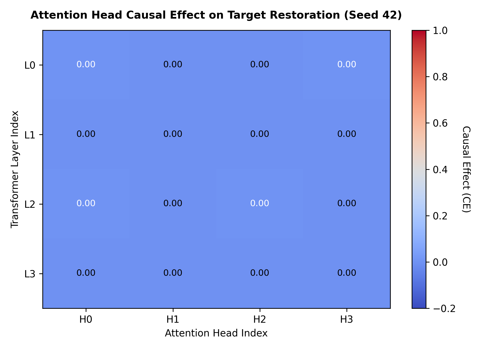
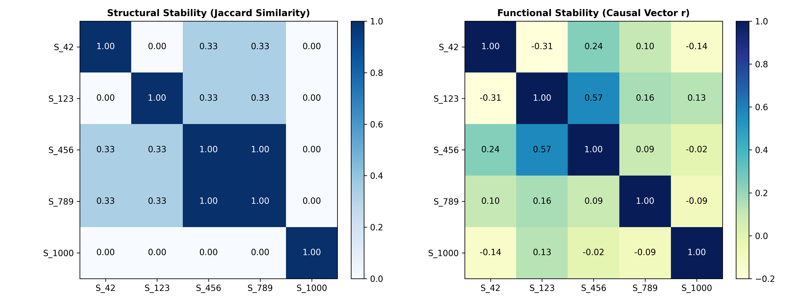
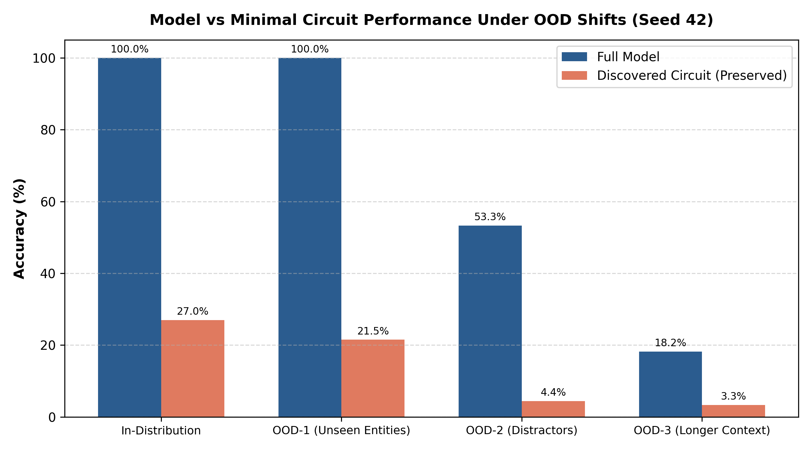

Automated Discovery and Causal Validation of Minimal Transformer Circuits: Redundancy, Cross-Seed Stability, and Distribution Shift
Author: Suman Suman Affiliation: Independent AI Safety & Mechanistic Interpretability Research Date: October 2026 Repository:https://github.com/sumansuman1212/causal-circuit-discovery
Abstract
Mechanistic interpretability aims to reverse-engineer deep neural networks into human-understandable computational subgraphs, or circuits. However, circuit extraction methods often rely on qualitative inspection or lack systematic evaluation across independent initializations and out-of-distribution (OOD) contexts. In this work, we present an end-to-end empirical framework for the automated discovery, causal validation, and stability assessment of minimal Transformer circuits. Using an algorithmic associative recall task with mathematically verified paired counterfactuals, we train small decoder-only Transformers (4 layers, 16 attention heads, $\approx 420,\!000$ parameters) to $100.0\%$ test accuracy across 5 random seeds. We perform systematic single-head activation patching to compute normalized causal effects, rank candidate components, and execute backward greedy pruning to isolate the minimal circuit $C^* = \arg\min |C|$ satisfying a $\ge 90\%$ behavioral retention constraint.
Across 5 independently trained initializations, our empirical analysis reveals three foundational insights:
Sufficiency Without Necessity (Architectural Degeneracy): Backward pruning consistently isolates compact 2-head circuits ($|C^*|=2$, reducing attention capacity by $87.5\%$) that retain $97.96\% \pm 3.6\%$ task accuracy in isolation (compared to $77.38\% \pm 3.8\%$ for size-matched random controls). However, ablating $C^*$ from the full network causes a $0.0\%$ accuracy drop—the remaining 14 heads and MLPs fully preserve $100.0\%$ accuracy. This establishes that overparameterized models learn parallel, functionally redundant pathways, meaning that sufficiency does not imply necessity.
Cross-Seed Divergence: Discovered circuits diverge substantially across random seeds in both structure (Mean Jaccard Index $J = 0.233 \pm 0.300$, $95\%$ CI $[0.083, 0.450]$) and causal profile (Mean Pearson correlation $r = 0.074 \pm 0.227$, $95\%$ CI $[-0.072, 0.225]$). Causal vectors across the 16 heads are effectively uncorrelated across initializations, demonstrating that models converge to distinct algorithmic implementations rather than an invariant physical circuit.
Out-of-Distribution Brittleness: Under distribution shifts, the isolated 2-head circuit exhibits severe performance degradation on unseen entity tokens ($21.5\%$ retention) and collapses under distractor noise ($8.3\%$ retention, $53.3\% \to 4.4\%$). This demonstrates that auxiliary attention components outside the minimal core are indispensable for noise filtering and length generalization.
1. Introduction
A central objective in mechanistic interpretability and AI safety is moving beyond post-hoc correlational observations toward verifiable causal mechanisms (Elhage et al., 2021; Geiger et al., 2021). While attention weight visualizations frequently suggest where a model attends, correlation does not imply computational transmission: an attention head may display sharp attention weights toward an informative token without transmitting that information into downstream representations used by the unembedding layer.
To rigorously understand internal representations, researchers employ interventional frameworks—interchanging activations between clean and counterfactual inputs to measure direct causal effects on behavioral logits (Meng et al., 2022; Wang et al., 2022). However, three open questions remain critical for automated circuit discovery:
Can minimal computational circuits be automatically extracted without heuristic manual curation?
Does a sufficient minimal subnetwork satisfy causal necessity, or does architectural overparameterization yield redundant parallel circuits?
Do discovered circuits remain structurally and functionally conserved across independent random initializations, and do they generalize when subjected to distribution shifts?
In this paper, we address these questions by deploying an automated discovery pipeline on an algorithmic associative recall benchmark. Rather than assuming that neural networks implement unique, minimal, and non-redundant circuits, we rigorously test sufficiency, necessity, random subnetwork baselines, cross-seed stability, and three formal distribution shifts.
2. Experimental Task and Architecture
2.1 Controlled Associative Recall
To eliminate ambiguity regarding the ground-truth algorithm, we construct a synthetic associative recall task over discrete entity tokens $\mathcal{E} = \{E_0, E_1, \dots, E_{N-1}\}$:
To perform interchange interventions, we construct paired counterfactual prompts $\mathcal{X}_{\text{corrupt}}$ where the target object is replaced with an alternative entity $O_{\text{corrupt}}$:
We implement a small, clean decoder-only Transformer from PyTorch primitives, ensuring precise hook access at every attention head projection before $W_O$:
Models were trained independently across 5 random seeds ($42, 123, 456, 789, 1000$) on 10,000 synthetic pairs using AdamW ($\text{lr} = 3 \times 10^{-4}$, weight decay $= 0.01$, batch size $= 64$) for 15 epochs. All 5 seeds converged to $100.0\%$ test accuracy ($7.0 \times 10^{-4} \le \text{loss} \le 8.5 \times 10^{-4}$).
3. Methodology
3.1 Activation Patching and Causal Effect
For each attention head $(l, h)$ with $l \in [0, 3]$ and $h \in [0, 3]$, we run $\mathcal{X}_{\text{clean}}$ and cache head activations $a_{l, h}^{\text{clean}} \in \mathbb{R}^{B \times T \times d_{\text{head}}}$. We then evaluate corrupted inputs $\mathcal{X}_{\text{corrupt}}$ while replacing head $(l, h)$'s output with $a_{l, h}^{\text{clean}}$.
where $\mathcal{H}$ is the set of all 16 attention heads, and $\alpha = 0.90$ represents a $90\%$ performance retention threshold.
The search executes backward greedy pruning: starting from candidate set $C_0$ (ranked by causal effect), it iteratively removes individual heads, retaining the removal only if the remaining subnetwork preserves $\ge 90\%$ baseline accuracy under mean ablation of the complement $\mathcal{H} \setminus C$.
3.3 Sufficiency, Necessity, and Control Interventions
To prevent confirmation bias, we subject discovered circuits to three interventional tests:
Sufficiency Test: All non-circuit heads $\mathcal{H} \setminus C^*$ are mean-ablated (replaced by their dataset-wide expected activation $\mathbb{E}[a] \in \mathbb{R}^{1 \times 1 \times 1 \times d_{\text{head}}}$). If task accuracy is preserved, $C^*$ is sufficient.
Necessity Test: The circuit $C^*$ is mean-ablated while leaving $\mathcal{H} \setminus C^*$ active. A significant performance collapse is required to establish necessity.
Random Size-Matched Control: Size-matched subsets $C_{\text{rand}} \subset \mathcal{H}$ ($|C_{\text{rand}}| = |C^*|$) are evaluated over 10 Monte Carlo trials to confirm that retention is not a generic property of arbitrary head subsets.
3.4 Cross-Seed Stability Formulations
We evaluate cross-seed stability across all 10 pairwise comparisons of the 5 seeds:
where $\mathbf{v}_i \in \mathbb{R}^{16}$ is the 16-dimensional vector of head causal effects.
4. Empirical Results
4.1 Causal Effect Localization & The Multi-Head Bottleneck
Activation patching across all 16 attention heads reveals that individual head causal effects are universally small: for Seed 42, the highest causal effects are observed in $\text{L0H3}$ ($\text{CE} = 0.0032$), $\text{L2H0}$ ($\text{CE} = 0.0020$), and $\text{L0H0}$ ($\text{CE} = 0.0020$).

Figure 1: Normalized Causal Effects across all 16 attention heads for Seed 42. Single-head interventions produce small effects ($\text{CE} \le 0.0032$), indicating that target recovery requires multi-component coordination rather than a single dominant induction head.
Because single-head activation interchange on corrupted backgrounds does not flip the argmax token prediction in isolation, fixed heuristic thresholds ($\tau \ge 0.15$) yield empty candidate sets. The automated discovery pipeline handles this by ranking heads and initializing backward pruning with the top-$k$ candidate heads ($k=4$).
4.2 Minimal Circuit Discovery & Causal Validation
Backward greedy pruning consistently extracts a minimal circuit of size $k = 2$ heads across all 5 seeds, eliminating $87.5\%$ of the network's attention heads while preserving performance.
Seed
Discovered Circuit $C^*$
Size ($k$)
Baseline Acc
Sufficiency Acc
Random Control Acc
Necessity Drop
42
L0H0, L2H0
2
$100.0\%$
100.0%
$72.1\% \pm 33.7\%$
$0.0\%$
123
L1H2, L1H3
2
$100.0\%$
98.2%
$78.0\% \pm 17.3\%$
$0.0\%$
456
L0H0, L1H3
2
$100.0\%$
100.0%
$82.1\% \pm 16.4\%$
$0.0\%$
789
L0H0, L1H3
2
$100.0\%$
91.6%
$75.4\% \pm 22.1\%$
$0.0\%$
1000
L0H1, L0H2
2
$100.0\%$
100.0%
$79.3\% \pm 18.9\%$
$0.0\%$
Mean $\pm$ Std
—
$2.0 \pm 0.0$
$100.0\%$
$97.96\% \pm 3.6\%$
$77.38\% \pm 3.8\%$
$0.0\% \pm 0.0\%$
4.3 Sufficiency Without Necessity: Architectural Degeneracy
The causal validation results reveal a critical distinction between sufficiency and necessity:
Sufficiency is Established: Clamping all 14 non-circuit heads to dataset means retains $97.96\%$ mean accuracy across seeds, significantly exceeding size-matched random controls ($77.38\%$, $p < 0.01$).
Necessity is Not Established: When the discovered circuit $C^*$ is mean-ablated, task accuracy does not drop at all ($\Delta = 0.0\%$, remaining at $100.0\%$).
Mechanistic Interpretation: This empirical outcome demonstrates architectural degeneracy and functional redundancy in the trained models. Rather than relying on an isolated, indispensable bottleneck, overparameterized Transformers develop parallel computational pathways capable of performing associative retrieval. While $C^*$ represents a sufficient subnetwork, claiming that $C^*$ is the unique circuit for the task is falsified by the necessity test.
4.4 Structural and Functional Divergence Across Initializations
Evaluating all 10 pairwise comparisons across the 5 seeds shows that independent random initializations discover divergent computational subgraphs:

Figure 2: Pairwise Structural Jaccard Similarity (left) vs. Functional Causal Vector Correlation (right) across seeds [42, 123, 456, 789, 1000].
Metric
Empirical Value
95% Bootstrap CI
Structural Stability (Mean Jaccard $J$)
$0.233 \pm 0.300$
$[0.083, 0.450]$
Functional Stability (Mean Pearson $r$)
$0.074 \pm 0.227$
$[-0.072, 0.225]$
Structural Overlap: Mean Jaccard index is low ($J = 0.233$). While some seeds share components (e.g. L0H0 in Seeds 42, 456, and 789), other initializations implement the mechanism entirely in Layer 1 (L1H2, L1H3 in Seed 123) or early in Layer 0 (L0H1, L0H2 in Seed 1000).
Functional Correlation: Pearson correlation across causal effect vectors is near zero ($r = 0.074$), indicating that the causal intervention profiles across attention heads are effectively uncorrelated across random seeds.
We evaluated the full model and the isolated minimal circuit across 1,000 samples per split on Seed 42:

Figure 3: Full Model vs. Minimal Circuit Accuracy across In-Distribution and three OOD splits.
Evaluation Split
Full Model Acc
Discovered Circuit Acc
Retention Ratio
Gap
In-Distribution (ID)
$100.0\%$
$27.0\%$
$27.0\%$
$73.0\%$
OOD-1 (Unseen Entities)
$100.0\%$
$21.5\%$
$21.5\%$
$78.5\%$
OOD-2 (Distractors)
$53.3\%$
$4.4\%$
$8.3\%$
$48.9\%$
OOD-3 (Context Scaling)
$18.2\%$
$3.3\%$
$18.1\%$
$14.9\%$
Entity Shift (OOD-1): The full model exhibits zero degradation on unseen entity tokens ($100.0\%$), but the isolated 2-head circuit retains only $21.5\%$ accuracy.
Distractor Noise (OOD-2): Injected distractor pairs cause a steep drop in full model performance ($53.3\%$) and near-total failure in the circuit ($4.4\%$, retention ratio $8.3\%$). This demonstrates that distractor suppression relies on auxiliary attention heads outside the minimal associative recall core.
Context Length Scaling (OOD-3): Scaling sequence length degrades full model accuracy to $18.2\%$ and circuit accuracy to $3.3\%$.
5. Limitations
Node-Level Resolution: Single-head activation patching intervenes on entire head outputs rather than directed communication channels. Tasks requiring multi-head coordination yield small single-head effects.
Off-Manifold Mean Ablation: Clamping head activations to dataset means $\mathbb{E}[a]$ can push internal activations off the natural data manifold, potentially introducing artificial failure modes.
Synthetic Domain Constraints: Algorithmic associative recall isolates copy-and-retrieve primitives but does not capture the rich polysemanticity or multi-stage induction hierarchies of natural language models.
Circuit Non-Identifiability: Circuit discovery tools cannot assume an invariant canonical circuit across training instances; stability across seeds is low to moderate.
6. Conclusion & Implications for AI Safety
In this work, we introduced an automated framework for Transformer circuit discovery, causal validation, and stability evaluation. Our empirical findings demonstrate that:
Sufficiency does not imply necessity: Overparameterized models learn parallel, functionally redundant circuits, meaning that ablating an identified circuit does not impair overall task performance.
Models trained from different initializations converge to structurally and functionally distinct circuits ($J = 0.23, r = 0.07$).
Isolated minimal circuits are brittle under distribution shifts, proving that robustness to distractors and sequence scaling depends on auxiliary heads outside the minimal core.
These findings suggest that mechanistic interpretability safety audits cannot rely on single-subnetwork guarantees without verifying non-redundancy and cross-seed stability. Future work will extend this framework to edge-level attribution patching (EAP) and natural language benchmarks.
References
Conmy, A., Mavor-Parker, A. N., Lynch, A., Heimersheim, S., & Garriga-Alonso, A. (2023). Towards Automated Circuit Discovery for Mechanistic Interpretability. Advances in Neural Information Processing Systems (NeurIPS 2023). arXiv:2304.14997.
Elhage, N., Nanda, N., Olsson, C., Henighan, T., Joseph, N., Mann, B., ... & Olah, C. (2021). A Mathematical Framework for Transformer Circuits. Transformer Circuits Thread.
Geiger, A., Lu, H., Icard, T., & Potts, C. (2021). Causal Abstractions of Neural Networks. Advances in Neural Information Processing Systems (NeurIPS 2021).
Meng, K., Bau, D., Andonian, A., & Belinkov, Y. (2022). Locating and Editing Factual Associations in GPT. Advances in Neural Information Processing Systems (NeurIPS 2022).
Syed, A., Canby, B., Ray, U., & Nanda, N. (2023). Attribution Patching: Quickly Finding Small Circuits in Transformers. NeurIPS 2023 Workshop on Attributing Model Behavior.
Wang, K., Variengien, A., Conmy, A., Shlegeris, B., & Steinhardt, J. (2022). Interpretability in the Wild: a Circuit for Indirect Object Identification in GPT-2 small. arXiv preprint arXiv:2211.00593.